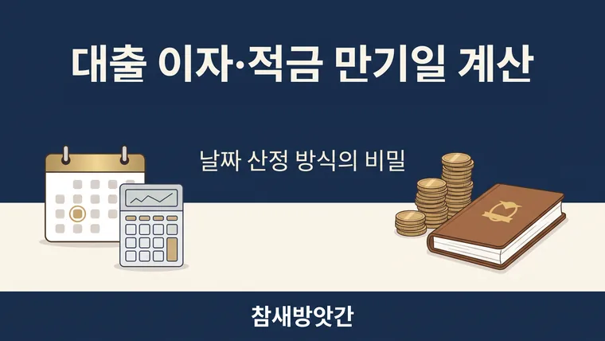

대출 이자 및 적금 만기일 계산 시 날짜 산정 방식의 비밀
대출 이자는 보통 돈을 빌린 첫날은 포함하고 갚는 날은 제외해 일 단위로 계산합니다. 만기일이 휴일이면 처리 방식이 금융기관마다 달라 약관 확인이 필요합니다.

통장에서 원리금이 빠져나갈 때마다 헷갈리는 이자 계산의 원리
매달 대출 이자를 상환하거나 알뜰하게 모아온 적금의 만기일을 기다릴 때, 우리가 앱이나 통장에서 확인하는 금액은 예상했던 숫자와 몇 백 원, 몇 천 원 차이가 나는 경우가 있습니다. 특히 "이자는 일할 계산(일 단위)된다"는 말을 들으면, 정확히 내가 돈을 빌리거나 맡긴 '당일'부터 이자가 붙는 것인지, 아니면 '다음 날'부터 붙는 것인지 선뜻 판단하기 어렵습니다.
내가 직접 금융 상품의 만기 이자를 확인하고 대출 상환 일정을 관리해 보니, 금융기관이 이자를 계산할 때 첫날과 마지막 날을 어떻게 세는지 모르면 날짜 계산에서 오차가 생길 수밖에 없더군요. 오늘은 금융 거래 시 꼭 알아두어야 할 이자 계산 및 만기일 산정의 핵심 원리를 정리해 드립니다.
금융권의 기간 산정 대원칙: 첫날은 포함, 마지막 날은 제외
대부분의 은행과 금융기관에서 대출 금리나 적금 이자를 산출할 때 적용하는 일반적인 기준은 돈을 빌리거나 맡긴 첫날(입금일·대출 실행일)은 이자 계산 기간에 포함하고, 마지막 날(상환일·만기일)은 제외하는 방식입니다. 다만 세부 기준은 상품과 약관에 따라 다를 수 있습니다.
첫날 포함, 마지막 날 제외의 작동 원리
- 예를 들어 10월 1일에 대출을 받고 10월 10일에 원금을 모두 갚는다면, 대출 기간은 총 10일이지만 이자가 부과되는 날수는 10월 1일부터 10월 9일까지 총 9일 치가 됩니다. 상환하는 당일(10월 10일)은 이자 산정에서 제외되는 것이죠.
- 첫날과 마지막 날을 모두 넣어 세면 하루치 이자가 더해지므로, 약관에서 어느 방식을 쓰는지 확인하는 것이 좋습니다.
적금 만기일이 주말이나 공휴일일 때 알아야 할 상식
알뜰히 모아온 적금이나 예금의 만기일이 하필 토요일이나 일요일, 또는 추석·설날 같은 명절 공휴일에 걸려 있다면 이자는 어떻게 처리될까요?
- 만기일 이후 영업일에 해지하는 경우: 만기일이 공휴일이면 바로 다음 영업일에 해지해 돈을 찾게 됩니다. 만기일부터 실제로 찾는 날까지의 이자는 상품 약관에 따라 만기 후 이율이 적용되는 경우가 많고, 금융기관마다 방식이 다르므로 가입한 상품의 약관을 확인해야 합니다.
- 만기일 전 영업일에 조기 해지하는 경우: 급하게 자금이 필요해 만기일 바로 전 영업일(예: 주말 전 금요일)에 해지를 요청할 수도 있습니다. 이 경우에는 약정한 만기 기간을 채우지 못한 것으로 간주되어 중도해지 이율이 적용될 수 있으므로 주의해야 합니다.
대출 이자 절약을 위한 날짜 계산 활용 노하우
대출금을 상환할 때는 '단 하루'의 이자 산정 날짜 차이가 실제 지출 금액에 영향을 미칠 수 있습니다. 대출 상환 계획을 세울 때는 당일 상환 시 자정(24:00) 기준인지, 영업시간 마감 전 기준인지 확인해야 합니다.
이러한 금융 이자 계산은 보통 '연 이율 ÷ 365일'로 하루치 이자를 구한 뒤 실제 경과한 일수를 곱하는 방식이며, 윤년을 어떻게 처리하는지는 상품 약관에 따라 달라질 수 있습니다. 대출이자계산기와 적금이자계산기에 금액과 금리, 기간을 넣어 대략의 이자를 미리 확인해 두면 가계 채무 관리나 목돈 운용 계획을 세우는 데 도움이 됩니다.
· 금융권의 대출·예적금 이자는 보통 첫날은 포함하고 마지막 날은 제외하는 방식으로 일 단위 계산을 합니다.
· 적금 만기일이 주말이나 공휴일이면 처리 방식이 금융기관마다 다르므로 가입한 상품의 약관을 확인해야 합니다.
· 일할 이자와 윤년 처리는 상품마다 다를 수 있어, 계산기로 대략의 금액을 확인한 뒤 약관과 비교하면 좋습니다.
이 글의 기준과 예시는 2026년 10월 기준입니다. 법령이나 제도가 바뀌면 내용이 달라질 수 있으니, 신고·계약·서류 제출 전에는 해당 기관에서 최신 기준을 확인하세요. 계산 결과는 참고용입니다.
🔮 다음 글 예고
다음 글에서는 윤년이 무엇인지, 2월 29일생의 나이는 어떻게 계산하는지 알아봅니다.